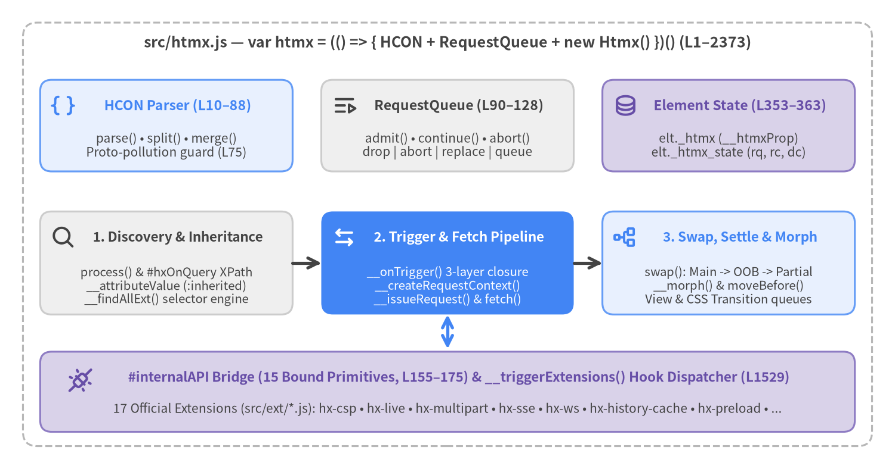
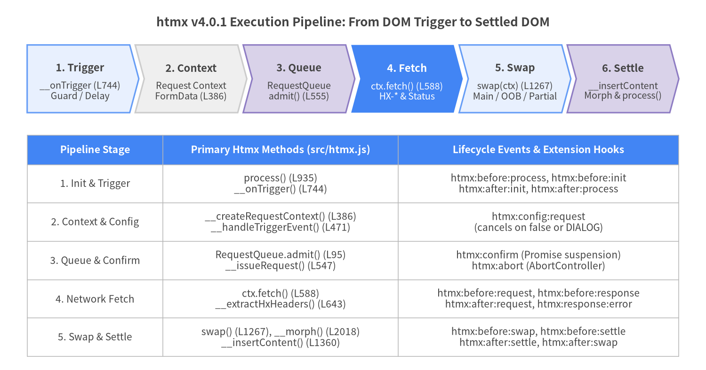

htmx v4.0.1 Internal Architecture Guide
htmx v4.0.1 ("The Fetchening") is a complete ground-up architectural rewrite of htmx, replacing the legacy 4,000+ line XMLHttpRequest closure of htmx 2.x with a cohesive 2,373-line ES2022 Htmx class (src/htmx.js) built around fetch(), AbortController, explicit :inherited attribute resolution, HCON (htmx Configuration Object Notation), a built-in Idiomorph-style DOM reconciliation engine, and a 15-primitive #internalAPI extension bridge.

Source Code
from drawlib.canvas import save, setup
from drawlib.icons import phosphor
from drawlib.lines import line
from drawlib.shapes import rectangle
from drawlib.styles import Styles
from drawlib.text import text
setup(width=156, height=82, dpi=150)
# Outer IIFE Boundary
rectangle((78, 41), width=148, height=74, style=Styles.MutedDashed.patch(shape_r=2.5))
text(
(78, 74.5),
"src/htmx.js — var htmx = (() => { HCON + RequestQueue + new Htmx() })() (L1–2373)",
style=Styles.DarkBold.patch(text_size=12.0),
)
# Top Tier: Static Helpers & State Primitives
rectangle((29, 60), width=44, height=16, style=Styles.PrimaryNeutral.patch(shape_r=2.0))
phosphor.brackets_curly((11, 63.5), width=4.2, style=Styles.PrimaryBold)
text((31, 63.5), "HCON Parser (L10–88)", style=Styles.PrimaryBold.patch(text_size=11.0))
text(
(29, 56.5),
"parse() • split() • merge()\nProto-pollution guard (L75)",
style=Styles.Dark.patch(text_size=10.0),
)
rectangle((78, 60), width=44, height=16, style=Styles.Neutral.patch(shape_r=2.0))
phosphor.queue((60, 63.5), width=4.2, style=Styles.DarkBold)
text((80, 63.5), "RequestQueue (L90–128)", style=Styles.DarkBold.patch(text_size=11.0))
text(
(78, 56.5),
"admit() • continue() • abort()\ndrop | abort | replace | queue",
style=Styles.Dark.patch(text_size=10.0),
)
rectangle((127, 60), width=44, height=16, style=Styles.SecondaryNeutral.patch(shape_r=2.0))
phosphor.database((109, 63.5), width=4.2, style=Styles.SecondaryBold)
text((129, 63.5), "Element State (L353–363)", style=Styles.SecondaryBold.patch(text_size=11.0))
text(
(127, 56.5),
"elt._htmx (__htmxProp)\nelt._htmx_state (rq, rc, dc)",
style=Styles.Dark.patch(text_size=10.0),
)
# Middle Tier: Core Htmx Pipeline Stages
rectangle((29, 36), width=44, height=18, style=Styles.Neutral.patch(shape_r=2.0))
phosphor.magnifying_glass((11, 40.5), width=4.2, style=Styles.DarkBold)
text((31, 40.5), "1. Discovery & Inheritance", style=Styles.DarkBold.patch(text_size=10.8))
text(
(29, 32.0),
"process() & #hxOnQuery XPath\n__attributeValue (:inherited)\n__findAllExt() selector engine",
style=Styles.Dark.patch(text_size=9.8),
)
line((51, 36), (56, 36), arrow_head="->", style=Styles.DarkBold)
rectangle((78, 36), width=44, height=18, style=Styles.PrimaryFlat.patch(shape_r=2.0))
phosphor.arrows_left_right((60, 40.5), width=4.2, style=Styles.WhiteBold)
text((80, 40.5), "2. Trigger & Fetch Pipeline", style=Styles.WhiteBold.patch(text_size=10.8))
text(
(78, 32.0),
"__onTrigger() 3-layer closure\n__createRequestContext()\n__issueRequest() & fetch()",
style=Styles.White.patch(text_size=9.8),
)
line((100, 36), (105, 36), arrow_head="->", style=Styles.DarkBold)
rectangle((127, 36), width=44, height=18, style=Styles.PrimaryNeutral.patch(shape_r=2.0))
phosphor.tree_structure((109, 40.5), width=4.2, style=Styles.PrimaryBold)
text((129, 40.5), "3. Swap, Settle & Morph", style=Styles.PrimaryBold.patch(text_size=10.8))
text(
(127, 32.0),
"swap(): Main -> OOB -> Partial\n__morph() & moveBefore()\nView & CSS Transition queues",
style=Styles.Dark.patch(text_size=9.8),
)
# Bottom Tier: #internalAPI & 17 Official Extensions
line((78, 27), (78, 21), arrow_head="<->", style=Styles.PrimaryBold)
rectangle((78, 13.5), width=142, height=14, style=Styles.SecondaryNeutral.patch(shape_r=2.0))
phosphor.plugs_connected((14, 15.5), width=4.5, style=Styles.SecondaryBold)
text(
(80, 16.0),
"#internalAPI Bridge (15 Bound Primitives, L155–175) & __triggerExtensions() Hook Dispatcher (L1529)",
style=Styles.SecondaryBold.patch(text_size=10.8),
)
text(
(78, 10.5),
"17 Official Extensions (src/ext/*.js): hx-csp • hx-live • hx-multipart • hx-sse • hx-ws • hx-history-cache • hx-preload • ...",
style=Styles.Dark.patch(text_size=10.0),
)
save()
1. Architectural Evolution: htmx 2.x vs. htmx v4.0.1
htmx v4.0.1 re-architects every subsystem around modern browser primitives while shedding legacy complexity into modular extensions (src/ext/*.js).
| Architectural Dimension | htmx 2.x (Legacy Architecture) | htmx v4.0.1 (src/htmx.js) |
Source Reference |
|---|---|---|---|
| Module Encapsulation | ~4,000+ LOC monolithic closure with dozens of free-floating functions | 2,373 LOC ES2022 class Htmx + HCON + RequestQueue inside an IIFE |
src/htmx.js L1–2373 |
| Private Member Strategy | Closure-scoped functions inaccessible to direct unit testing | __ methods in src/htmx.js lowered via sed to native # private fields in dist/ |
package.json L30–31 |
| Network Transport | XMLHttpRequest (xhr) event callbacks |
Async/await window.fetch() + AbortController + ReadableStream extensions |
src/htmx.js L389, L583–598 |
| Config & Attribute Syntax | Ad-hoc regex parsers per attribute (hx-swap, hx-trigger, JSON hx-vals) |
Unified HCON parser (HCON.parse, HCON.split, HCON.merge) |
src/htmx.js L10–88 |
| Attribute Inheritance | Implicit DOM-wide inheritance on almost all hx-* attributes |
Opt-in explicit :inherited and :append modifiers (implicitInheritance: false) |
src/htmx.js L204, L288–320 |
| Event Naming Convention | Mixed camelCase (htmx:beforeRequest, htmx:afterOnLoad) |
Colon-hierarchical htmx:phase:action (htmx:before:request, htmx:after:swap) |
src/htmx.js L1512–1541 |
| Multi-Swap & Partials | hx-swap-oob only |
Unified task pipeline: Main Swap $\rightarrow$ hx-swap-oob $\rightarrow$ <hx-partial> |
src/htmx.js L1059–1184, L1267–1326 |
| DOM Morphing | External idiomorph library required |
Built-in innerMorph / outerMorph engine with Node.prototype.moveBefore |
src/htmx.js L2018–2269 |
| History Navigation | popstate + localStorage HTML cache in core |
Modern Navigation API (navigation.addEventListener('navigate')) + modular hx-history-cache.js |
src/htmx.js L1252–1263, L1630–1719 |
| Indicator CSS Injection | Inline <style> element appended to <head> (breaks strict CSP) |
Constructable new CSSStyleSheet() pushed to document.adoptedStyleSheets |
src/htmx.js L215–228 |
2. End-to-End Request, Swap & Extension Lifecycle
Every interaction in htmx v4 flows through a deterministic asynchronous pipeline: from trigger event evaluation (__onTrigger) to context assembly (__createRequestContext), queue admission (RequestQueue.admit), fetch() execution (__issueRequest), multi-task fragment extraction (swap), and DOM insertion/reconciliation (__insertContent / __morph).

Source Code
from drawlib.canvas import save, setup
from drawlib.smartarts import ChevronProcess, Table
from drawlib.styles import Styles
from drawlib.text import text
setup(width=156, height=82, dpi=150)
text(
(78, 77.0),
"htmx v4.0.1 Execution Pipeline: From DOM Trigger to Settled DOM",
style=Styles.DarkBold.patch(text_size=12.5),
)
pipeline = ChevronProcess(
style=Styles.Neutral,
text_style=Styles.DarkBold.patch(text_size=10.5),
description_style=Styles.Dark.patch(text_size=9.5),
corner_angle=75.0,
spacing=1.2,
flat_left_end=True,
)
pipeline.add(
"1. Trigger",
description="__onTrigger (L744)\nGuard / Delay",
style=Styles.PrimaryNeutral,
)
pipeline.add(
"2. Context",
description="Request Context\nFormData (L386)",
style=Styles.Neutral,
)
pipeline.add(
"3. Queue",
description="RequestQueue\nadmit() (L555)",
style=Styles.SecondaryNeutral,
)
pipeline.add(
"4. Fetch",
description="ctx.fetch() (L588)\nHX-* & Status",
style=Styles.PrimaryFlat,
text_style=Styles.WhiteBold.patch(text_size=10.5),
description_style=Styles.White.patch(text_size=9.5),
)
pipeline.add(
"5. Swap",
description="swap(ctx) (L1267)\nMain / OOB / Partial",
style=Styles.PrimaryNeutral,
)
pipeline.add(
"6. Settle",
description="__insertContent\nMorph & process()",
style=Styles.SecondaryNeutral,
)
pipeline.draw(xy=(6, 57), width=144, height=15)
table = Table(
cell_style=Styles.White,
text_style=Styles.Dark.patch(text_size=10.0),
header_cell_style=Styles.PrimaryFlat,
header_text_style=Styles.WhiteBold.patch(text_size=10.2),
border_style=Styles.MutedThin,
)
table.draw_flexible(
xy=(6, 52),
column_widths=[30.0, 52.0, 62.0],
row_heights=[6.5, 8.5, 8.5, 8.5, 8.5, 8.5],
data=[
["Pipeline Stage", "Primary Htmx Methods (src/htmx.js)", "Lifecycle Events & Extension Hooks"],
["1. Init & Trigger", "process() (L935)\n__onTrigger() (L744)", "htmx:before:process, htmx:before:init\nhtmx:after:init, htmx:after:process"],
["2. Context & Config", "__createRequestContext() (L386)\n__handleTriggerEvent() (L471)", "htmx:config:request\n(cancels on false or DIALOG)"],
["3. Queue & Confirm", "RequestQueue.admit() (L95)\n__issueRequest() (L547)", "htmx:confirm (Promise suspension)\nhtmx:abort (AbortController)"],
["4. Network Fetch", "ctx.fetch() (L588)\n__extractHxHeaders() (L643)", "htmx:before:request, htmx:before:response\nhtmx:after:request, htmx:response:error"],
["5. Swap & Settle", "swap() (L1267), __morph() (L2018)\n__insertContent() (L1360)", "htmx:before:swap, htmx:before:settle\nhtmx:after:settle, htmx:after:swap"],
],
)
save()
3. Core Subsystem Breakdown (src/htmx.js)
The 2,373 lines of src/htmx.js are organized into nine logical subsystems:
| Subsystem | Line Range | Key Classes / Methods | Responsibility |
|---|---|---|---|
1. HCON Parser |
L10–88 |
HCON.parse, HCON.split, HCON.merge |
Parses brace-free key-value config strings, splits top-level commas, and deep-merges objects with prototype-pollution protection. |
2. RequestQueue FSM |
L90–128 |
RequestQueue.admit, .continue, .abort |
Per-element request synchronization (drop, abort, replace, queue first, queue last, queue all). |
| 3. Bootstrap & Config | L130–238 |
constructor, __initHtmxConfig, __initRequestIndicatorCss, registerExtension |
Initializes htmx.config, merges <meta name="htmx-config">, adopts indicator CSSStyleSheet, and binds #internalAPI. |
| 4. Attribute & Inheritance Engine | L240–320, L1875–1893 |
__attr, __attributeValue, __getAttributeObject |
Resolves hx-* / data-hx-* attributes, :inherited and :append chains, and js: dynamic object expressions. |
| 5. Trigger Lexer & Event Wiring | L322–331, L734–888 |
__parseTriggerSpecs, __onTrigger, __extractFilter |
Compiles hx-trigger specs into 3-layer closures (guards, delay/throttle, changed/once), IntersectionObserver, and every timers. |
6. Request Context & fetch() Pipeline |
L333–705, L1807–1873, L2271–2286 |
__createRequestContext, __collectFormData, __issueRequest, __handleStatusCodes |
Builds FormData, enforces RequestQueue, awaits htmx:confirm, calls fetch(), handles HX-* headers, and routes hx-status:*. |
7. Subtree Processing & hx-on:* |
L890–1025, L1721–1755 |
process, __cleanup, #hxOnQuery, __handleHxOnAttributes, __executeJavaScript |
Evaluates XPath #hxOnQuery, wires action/boosted nodes, executes scoped JS, and tears down listeners/timers on cleanup. |
| 8. Multi-Task Swap & Transitions | L1027–1510, L1630–1719, L2288–2341 |
__makeFragment, __processOOB, __processPartials, swap, __insertContent |
Rewrites <hx-*>, preserves [hx-preserve] via a hidden pantry, executes Main/OOB/Partial swaps, updates history, and runs View/CSS transitions. |
| 9. Extended Selectors & DOM Morph | L1895–2269 |
__findAllExt, __morph, __morphChildren, __findBestMatch, __moveBefore |
Resolves closest/find/next/previous via compareDocumentPosition and reconciles DOM trees via persistent ID maps and moveBefore(). |
4. Guide Chapters & Navigation
Explore the six deep-dive chapters in this portal:
- Chapter 1 — Module & State Architecture
Single-file
Htmxclass layout, thesed__$\rightarrow$#private field lowering trick (package.json), constructableCSSStyleSheetindicator injection,elt._htmxvs.elt._htmx_statestores,process(root, force), and#hxOnQueryXPathEvaluatordiscovery. - Chapter 2 — Attribute Inheritance & HCON
The
HCONregex lexer, dotted-key expansion, prototype-pollution guards inHCON.merge,data-hx-prefix &metaCharacternormalization, and the explicit:inherited&:appendresolution algorithm in__attributeValue. - Chapter 3 — Trigger & Selector Parsers
__parseTriggerSpecstokenization, 3-layer event listener synthesis in__onTrigger(delay,throttle,changedWeakMap,once,IntersectionObserver,every), and__findAllExtpositional scanning withNode.prototype.compareDocumentPosition. - Chapter 4 — Fetch Context & Sync Queue
__createRequestContext,FormDataassembly (__collectFormData&__addInputValues),RequestQueueadmission state machine (hx-sync),AbortControllertimeouts,htmx:confirmsuspension,HX-*headers, and hierarchicalhx-status:Nxxrouting. - Chapter 5 — Swap, Settle & Morph Engine
<hx-*>$\rightarrow$<template hx>rewriting in__makeFragment, pantry preservation for[hx-preserve],swap(ctx)task ordering (Main $\rightarrow$ OOB $\rightarrow$<hx-partial>), built-in Idiomorph reconciliation (__morph,__createIdMaps,morphScanLimit,Node.prototype.moveBefore), and serialized View Transitions. - Chapter 6 — Extension & Security Internals
registerExtension&__triggerExtensionscolon-to-underscore hook dispatch, the 15-method#internalAPIbridge,__executeJavaScript& Trusted Types, 3-layer CSP enforcement insrc/ext/hx-csp.js(hx-nonce,safeEval), and deep dives intohx-live.js,hx-multipart.js,hx-sse.js, andhx-ws.js.